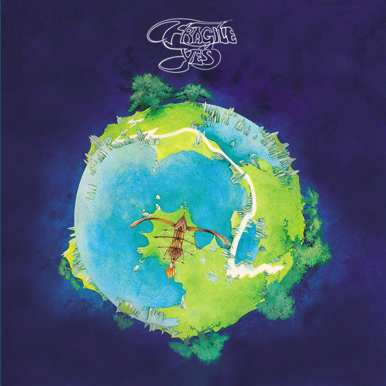

Álbumes que definieron el rock progresivo de los 70s
The Snow Goose (1975) - Camel
The Snow Goose es el tercer álbum del grupo Camel. Se compone de obras estrictamente instrumentales, como acto de rebeldía contra la productora oficial del grupo, por haberles ordenado concentrarse en realizar hits que fueran populares.
Este álbum es considerado a menudo como uno de los pilares más importantes y fundamentales del movimiento del Rock progresivo.
=== ESCUCHAR EN YOUTUBE ===
The Dark Side Of The Moon (1973) - Pink Floyd

The Dark Side of the Moon es el octavo álbum de estudio del grupo Pink Floyd.
Desarrollado durante presentaciones en vivo antes de que comenzara la grabación, fue concebido como un álbum conceptual que se centraría en las presiones que enfrentó la banda durante su arduo estilo de vida y también abordaría los problemas de salud mental del exmiembro de la banda Syd Barrett, quien dejó el grupo en 1968.
=== ESCUCHAR EN YOUTUBE ===
In The Court Of The Crimson King (1969) - King Crimson
In the Court of the Crimson King es el álbum debut del grupo King Crimson, producido y publicado en noviembre de 1969, considerado uno de los primeros álbumes de rock progresivo.
El álbum se destaca por la combinación de las letras y la instrumentación (con importante influencia de jazz y música clásica). Si bien otros artistas habían fusionado a estos géneros con el rock, el debut de King Crimson tuvo una atmósfera mucho más oscura y reflexiva, en parte por ideas de Peter Sinfield, quien escribió las letras.
=== ESCUCHAR EN YOUTUBE ===
Fragile (1971) - Yes

Fragile es el cuarto álbum de estudio del grupo Yes.
Se le conoce principalmente por la canción "Roundabout".
A diferencia de los primeros lanzamientos de Yes, este álbum pone en primer plano los talentos de cada miembro de la banda como solista.
=== ESCUCHAR EN YOUTUBE ===
Tarkus (1971) - Tarkus
Tarkus es el segundo álbum del grupo Emerson, Lake & Palmer. Este trabajo solidificó la fama del grupo.
=== ESCUCHAR EN YOUTUBE ===
Tubular Bells (1973) - Mike Oldfield
Tubular Bells es el primer disco de estudio del compositor y músico británico Mike Oldfield. Se compone de dos pistas en su mayoría instrumentales. Oldfield, que tenía 19 años cuando se grabó, tocó casi todos los instrumentos.
Inicialmente se vendió lentamente, pero ganó gran atención mundial cuando su tema de apertura se utilizó en la banda sonora original de la película de terror estrenada el mismo año "El Exorcista" dirigida por William Friedkin.
=== ESCUCHAR EN YOUTUBE ===
Selling England By The Pound (1973) - Genesis
Selling England by the Pound —en español: "Vendiendo Inglaterra al peso"— es el quinto álbum del grupo Genesis.
Fue el mayor éxito comercial de la banda con Peter Gabriel, llegando al puesto #3 en los rankings del Reino Unido.
Aunque Selling England By The Pound es descrito por la banda como un álbum de altos y bajos, produjo varias canciones clásicas que han estado en el repertorio de Génesis desde que el álbum fue grabado hasta la última gira de 2007. En este álbum, Tony Banks hace uso por primera vez de los sintetizadores electrónicos, demostrado en la obra maestra "Firth Of Fifth", la cual tiene una magnífica introducción en piano.
=== ESCUCHAR EN YOUTUBE ===